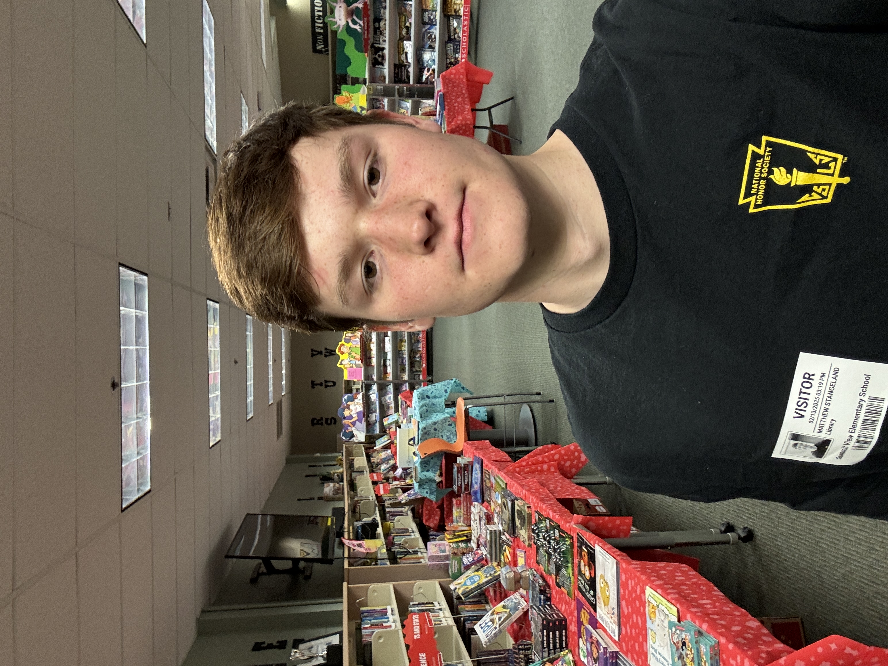
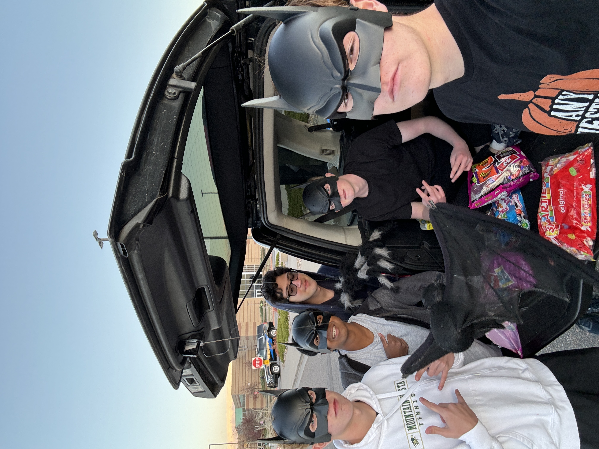
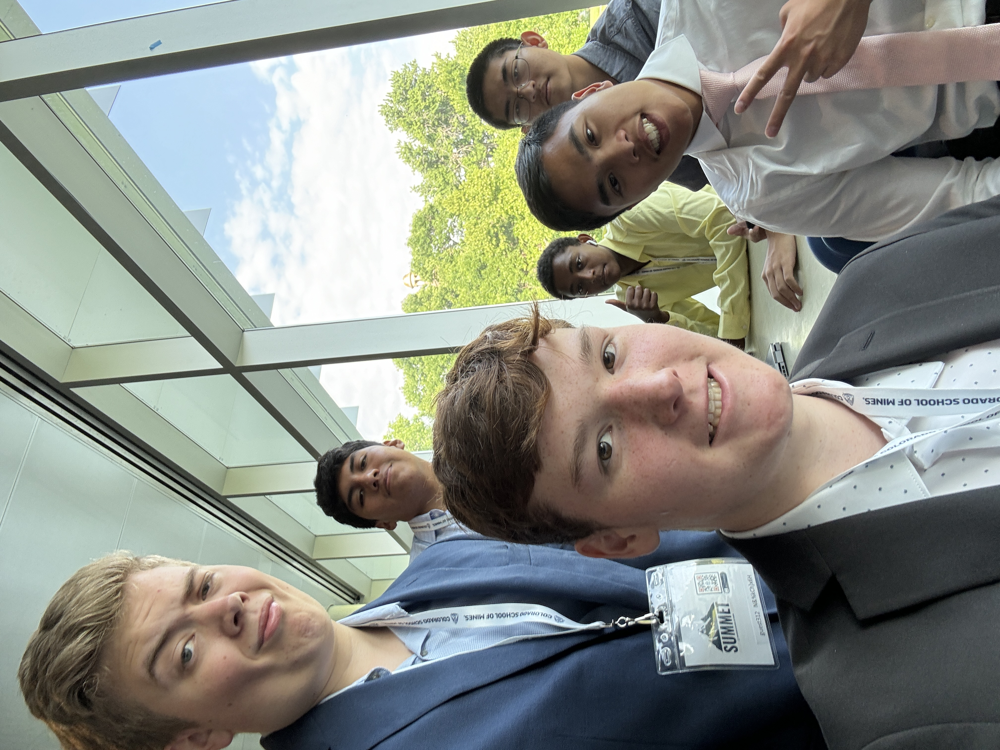
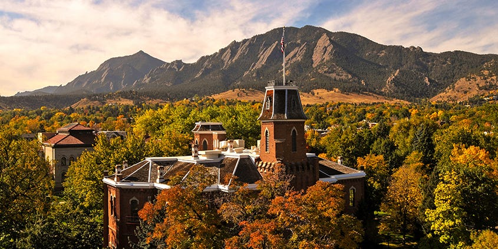

Achievements and Plans for the Future

Apart from my passions and social life, I have done a fairly good job with my academics as well.
I am in the National Honors Society, and will graduating with Honors. I've participated in community events,
managing for the Girls' tennis team, working more than 40 community service hours for Senior year.
I have a weighted GPA of 4.0, and have been recognized as a top academic mind at MVHS. I'm a good writer, programmer, and above all, a good student (at least that's what I've been told.)

NHS EVENT - Trunk or Treat with my friends
Tyler, Sean, Asher, and Jay.
Handed out candy on Halloween for all the trick or treaters!

SUMMET Program at Colorado School of Mines - Engineering prep, problem solving, community, and so much fun!

Chess Club Tournament - Lunch break, talking about chess, other stuff; overall a very fun event for the club!
Future Plans?

I will be attending the University of Colorado Boulder in Fall of 2025
as a first year, and the new class of 2029. I will be majoring, for right now,
in Compute Science, but I'll likely change it to something in business, as I believe
my skills are more centered around the business world.
This my new journey that I will be
doing, and leaving the one at high school behind. It is the end of a thirteen-year era in
my life, and I can not wait to start anew.
Thank you so much for looking at my little portfolio!